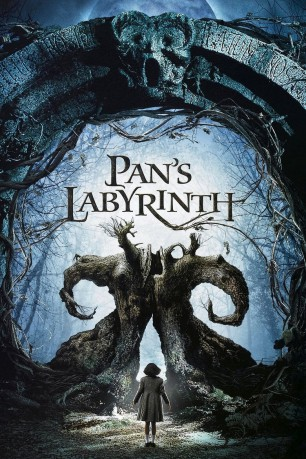

Auszeichnungen: 3 Oscars gewonnen für 3 Oscars nominiert 3 BAFTA-Awards gewonnen
 gesehen am 26.06.2015
gesehen am 26.06.2015Alternativ: Pan's Labyrinth (Englischer Titel)
Auszeichnungen: 3 Oscars gewonnen für 3 Oscars nominiert 3 BAFTA-Awards gewonnen gesehen am 26.06.2015
 
 IMDB-Wertung: 8.2 / 10
IMDB-Wertung: 8.2 / 10  IMDB-TOP-Platzierung: 131
IMDB-TOP-Platzierung: 131  Metascore:
Metascore: 
Spanien, 1944: Nachdem der Bürgerkrieg schon seit fünf Jahren vorbei ist, kämpfen in den Bergen Nordspaniens immer noch republikanische Partisanen gegen das faschistische Franco-Regime. Die elfjährige Ofelia zieht mit ihrer schwangeren Mutter Carmen in die umkämpfte Region, da ihr Stiefvater Hauptmann Vidal seine neue Frau bei sich haben will, wenn sie das Kind bekommt. Der sadistische Hauptmann ist von der Regierung mit der Zerschlagung des Widerstandes beauftragt worden und geht mit grausamen Methoden gegen die Rebellen und vermeintliche Sympathisanten vor. Ofelia flüchtet sich währenddessen in die Fantasiewelt ihrer Bücher, die von Elfen und andere Kreaturen bevölkert ist. Eines Tages erscheint ihr in einem Labyrinth in der Nähe des Landsitzes ein Pan, der ihr offenbart, dass sie in Wirklichkeit eine Königstochter aus einem unterirdischen Königreich sei. Er erlegt Ofelia drei Mutproben auf, die sie bestehen muss, um in das Reich ihres Vaters zurückkehren zu können…
Jahr: 2006
Dauer: 118 Minuten
FSK: 16
Land: Spanien Studio: Senator FilmTonspuren:
Untertitel:
Auflösung: 1080p (1920x1040) Größe: 8140 MB
Regisseur:  Guillermo del Toro
Guillermo del Toro
Drehbuch: Guillermo del Toro
Soundtrack: Javier Navarrete
Darsteller:
 Sergi López als Vidal
Sergi López als Vidal Doug Jones als Fauno / Pale Man
Doug Jones als Fauno / Pale Man Ariadna Gil als Carmen
Ariadna Gil als Carmen Manolo Solo als Garcés
Manolo Solo als GarcésDatei: X:\2006(N-Z)\Pans Labyrinth (2006, FSK16, 1920x1040).mkv seit 23.06.2015
Festplatte: HD 2005(G-Z)-2006(A-Z)
 Es gibt insgesamt 62 Filme in der Gruppe '2006(N-Z)'
Es gibt insgesamt 62 Filme in der Gruppe '2006(N-Z)'